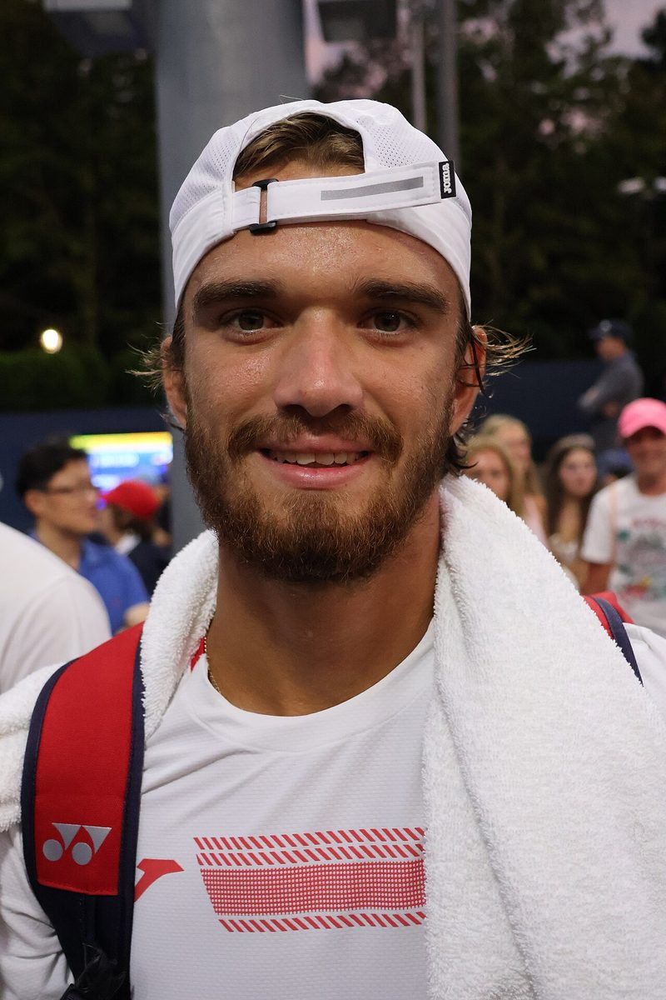

Легечка и Махач сокрушили Канаду и вывели Чехию в полуфинал Кубка Дэвиса
Под руководством капитана Томаша Бердыха чехи оформили победу со счетом 2:0 в Болонье и впервые за 12 лет пробились в четверку сильнейших.

Во вторник, 24 ноября 2026 года, сборная Чехии оформила путевку в полуфинал Кубка Дэвиса, всухую переиграв чемпионов 2022 года канадцев со счетом 2:0 в четвертьфинале «Финала восьми» на крытой арене в Болонье. Точку в противостоянии поставил 14-я ракетка мира Иржи Легечка (Jiří Lehečka), одолевший Феликса Оже-Альяссима (Félix Auger-Aliassime) со счетом 7:6 (4), 6:2. Ранее в первом одиночном матче Томаш Махач (Tomáš Macháč) в трех партиях сломил сопротивление Лиама Дракселя (Liam Draxl). Таким образом, чехи прервали 12-летнюю засуху: сборная не доходила до полуфинала престижнейшего командного турнира с 2014 года.
Легечка выстоял на брейк-пойнтах и сломал сопротивление Оже-Альяссима
Оже-Альяссим, занимающий 17-ю строчку в рейтинге ATP, подходил к поединку в статусе фаворита личных встреч — канадец выиграл три из четырех предыдущих матчей, включая дуэль на харде под крышей в Дубае в этом сезоне. Однако во второй одиночной встрече вторника Легечка проявил феноменальную выдержку. В стартовом сете канадец заработал девять брейк-пойнтов, включая сетбол при счете 5:4, но чех хладнокровно нейтрализовал каждую угрозу. 25-летний чешский теннисист перевел партию на тай-брейк, где при счете 6:4 подал навылет, закрыв тяжелейший 68-минутный сет.

«Это был невероятно сложный матч, — признался Легечка в интервью на корте. — Мне пришлось показать свой лучший теннис, отыгрывая брейк-пойнты в сложнейших ситуациях. В таких условиях Феликс чрезвычайно опасен, поэтому я горжусь тем, как сумел реализовать свои шансы».
Быстрый брейк и смелая тренерская ставка Бердыха
На кураже Легечка начал вторую партию с быстрого брейка и оторвался в счете — 3:0. При счете 5:2 Оже-Альяссим отыграл один матчбол пушечным ударом слева навылет, однако со второй попытки чех дожал оппонента: канадец сорвал бэкхенд по ширине, зафиксировав итоговую победу Легечки за ровно два часа борьбы. «Первый сет получился изматывающим, — отметил Оже-Альяссим. — Возможно, в начале второго я немного просел. Пытался зацепиться и бороться до конца, но соперник поймал кураж и действовал абсолютно безошибочно».
Капитан сборной Чехии Томаш Бердых (Tomáš Berdych), побеждавший в Кубке Дэвиса в качестве игрока в 2012 и 2013 годах, перед началом матчевой встречи удивил специалистов. Он оставил в запасе входящего в топ-20 Якуба Меншика (Jakub Menšík) и выставил на стартовую игру 59-ю ракетку мира Махача. Риск полностью оправдался: Томаш переиграл 154-го номера рейтинга Дракселя со счетом 6:2, 3-6, 6:2 за 1 час и 55 минут. Махач с ходу повел 4:0 в первом сете, а в решающей партии оформил ключевой брейк при счете 4:2, обеспечив чехам комфортное стратегическое преимущество.

Впереди полуфинал против Италии или Южной Кореи
Сборная Канады подошла к четвертьфиналу обескровленной: травмы вывели из строя лидеров одиночного разряда Дениса Шаповалова и Габриэля Диалло (Gabriel Diallo). В итоге подопечным Франка Данцевича (Frank Dancevic) даже не удалось перевести выяснение отношений в парную встречу.
В полуфинале, который состоится в Болонье в пятницу, сборная Чехии встретится с победителем среды — в этот день действующие чемпионы итальянцы сразятся со сборной Южной Кореи, мечтающей о своем историческом первом выходе в полуфинал Кубка Дэвиса.